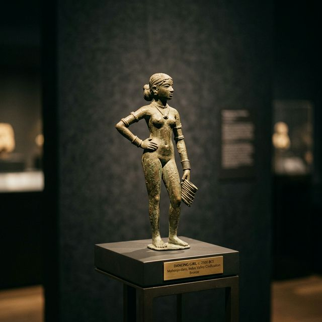
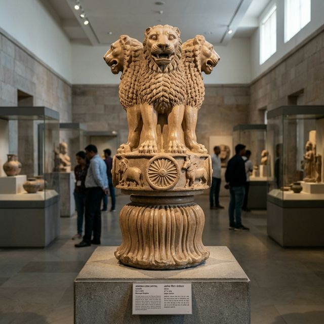
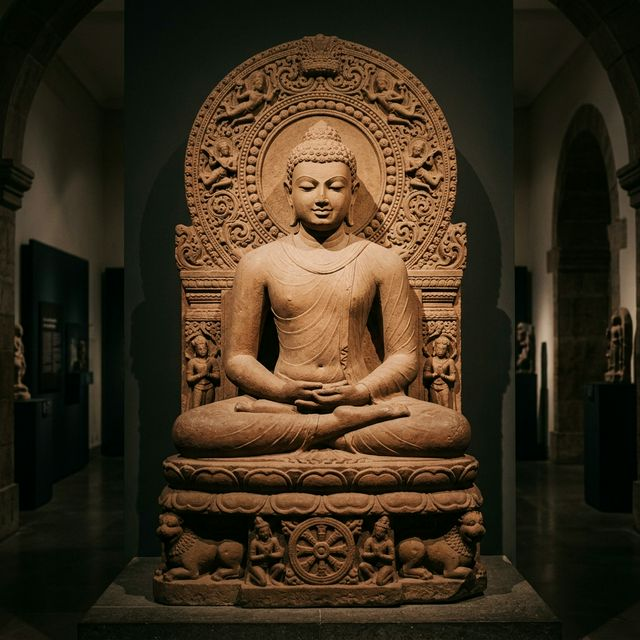
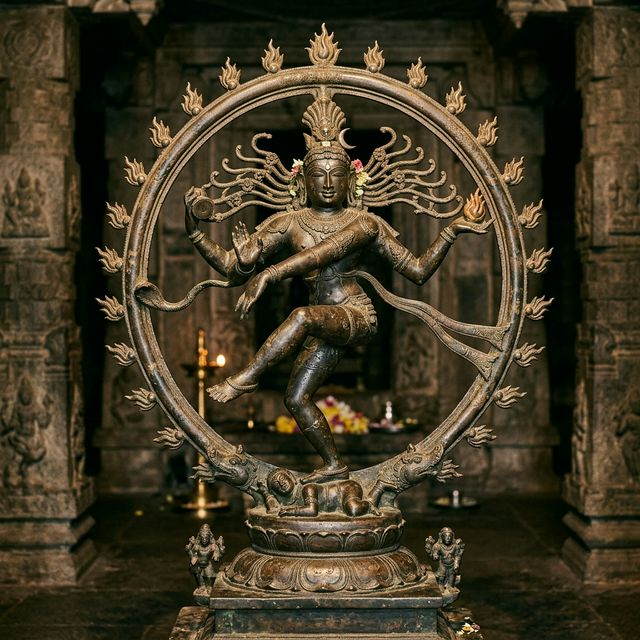
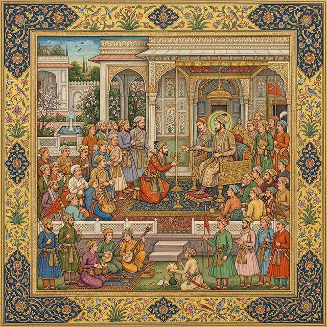
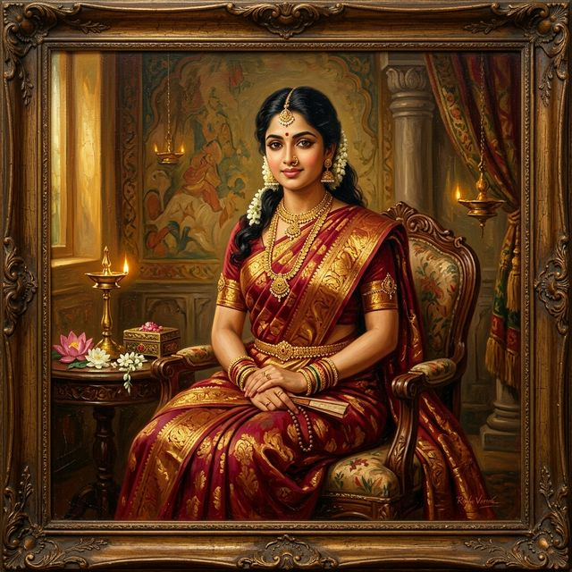
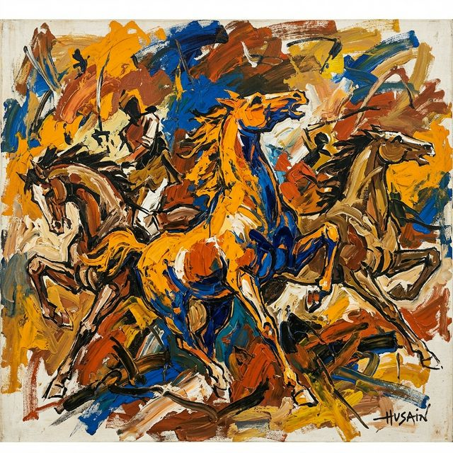

Indian Art
Through the Ages
A grand chronological journey celebrating the aesthetic, spiritual, and technical evolution of Indian artistic traditions across millennia.
Interactive Art Map of India
Explore prominent artistic centers across historical India. Click or hover on any marker to discover regional art forms and their historical significance.
Mauryan Realm
Under Emperor Ashoka, royal stone carving reached grand heights at Sarnath and Chunar, creating polished pillars and the iconic Lion Capital with the Ashoka Chakra.
The Chronological Evolution
Follow the transformation of artistic mediums, motifs, and philosophy from 2500 BCE to the 20th Century.

c. 2500 BCEDancing Girl
Cast in bronze using the lost-wax technique, this world-renowned artifact from Mohenjo-daro displays remarkable naturalism, posture, and poise. Wearing multiple bangles along her arm, she symbolizes early mastery over metallurgy and anatomical aesthetics.

c. 250 BCELion Capital of Ashoka
Carved from a single block of polished Chunar sandstone at Sarnath, this majestic capital depicts four Asiatic lions standing back-to-back atop an abacus adorned with the Ashoka Chakra, representing royal authority and Buddhist Dhamma.

c. 5th Century CESeated Buddha Statue
Crafted during the Golden Age of Indian art, this iconic Sarnath sandstone sculpture depicts Buddha in the Dharmachakra Pravartana Mudra. It epitomizes spiritual tranquility, perfected proportions, and exquisite sheer drapery.

c. 10th–11th Century CEChola Nataraja
A masterwork of South Indian bronze casting, Shiva as Nataraja performs the cosmic dance of creation, preservation, and destruction (Ananda Tandava) encircled by a halo of flames, balancing dynamic movement with divine composure.

c. 16th–17th Century CEMughal Miniature Painting
Renowned for jewel-like colors, fine brushwork, and intricate details, Mughal miniatures blended Persian court art with indigenous Indian aesthetics to document royal court scenes, natural flora and fauna, and historical events.

c. 19th–20th Century CERaja Ravi Varma Painting
Pioneer of modern Indian art, Raja Ravi Varma harmonized European academic oil painting techniques with traditional Indian mythological themes. His lithographic prints democratized art, bringing sacred imagery into common Indian homes.

c. 20th Century CEM. F. Husain Artwork
A founding member of the Progressive Artists' Group, M. F. Husain revolutionized post-independence Indian art using bold, cubist-inspired strokes and vibrant colors to depict iconic motifs like galloping horses, epics, and rural life.
Summary of Artistic Evolution
Indian art is a testament to cultural continuity and adaptive creativity. From the ancient bronze casting of the Indus Valley to the stone majesty of Mauryan pillars, classical Gupta spirituality, intricate Mughal miniatures, colonial fusion, and modern expressionism, each epoch has redefined the visual heritage of India while preserving its soul.